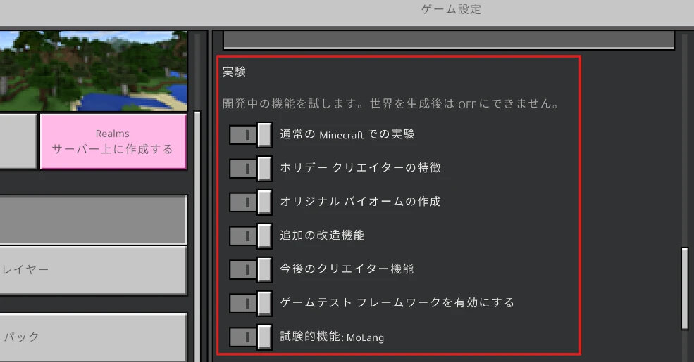

ようこそ！
たらそばが作ったアドオンを配布しているサイトです。
「アドオン一覧」から各アドオンの詳細を見ることができ、ページ下部にダウンロードリンクがあります。
アドオンで遊ぶ際は利用規約を守るようお願いします。
バグに関しては Twitter のDMなどで言っていただけるとありがたいです。
【注意】
- マイクラのアップデートなどにより、アドオンが正常に動かなくなることがあります。
- アドオンはPC、スマホ版で遊ぶことができます。
-
どうやらiOSのバージョンが13.0以上だとmcpack、mcaddonなどの拡張子が使えないみたいです。
この問題がすでに解決しているのかどうかは知らないので(おい)一応書いておきますｽｿｿ...
Yahoo知恵袋に解決策が載ってたのでリンクです→ Yahoo知恵袋
（もしこの問題がすでに解決していたら教えていただけるとうれしいです） -
ワールド設定の「実験」項目にあるトグルは全て「オン」にしてください。
（下の画像通り）